06
Мессенджер
Безопасность в MAX(Макс)
Особенность мессенджера — это его глубокая интеграция в отечественные экосистемы (на данный момент работают Госуслуги, официальные боты государственных ведомств и другие сервисы), а также — работа на местных дата-центрах.
Чтобы обеспечить безопасность учетной записи в MAX, рекомендуется использовать комплекс мер, включая настройку встроенных функций защиты, а также осторожное поведение в сети.
Пароль для входа
Это дополнительный пароль для каждого нового входа. После ввода одноразового кода из SMS для входа в MAX потребуется не только этот код, но и заранее установленный пользователем пароль.
Профиль → Безопасность → Пароль для входа.
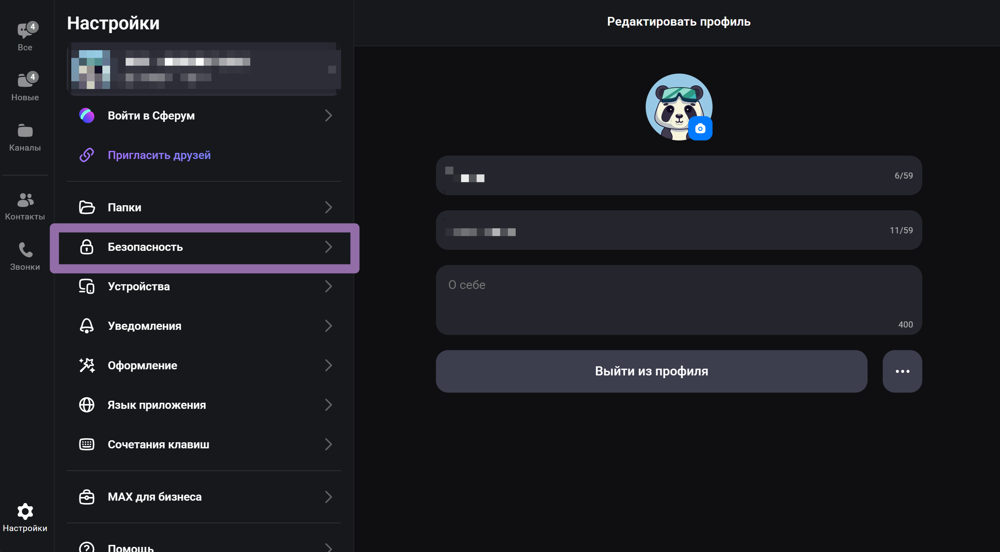
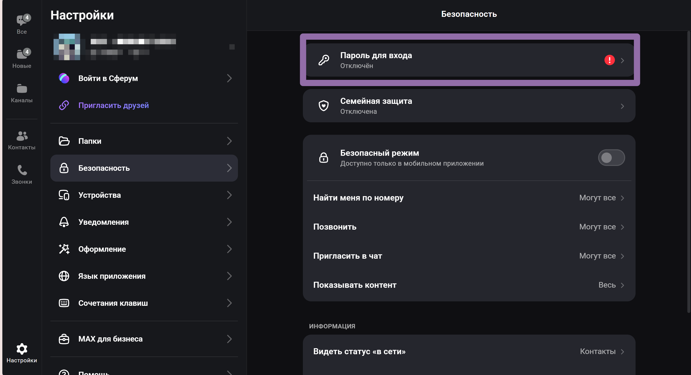
Установить пароль → Придумайте пароль
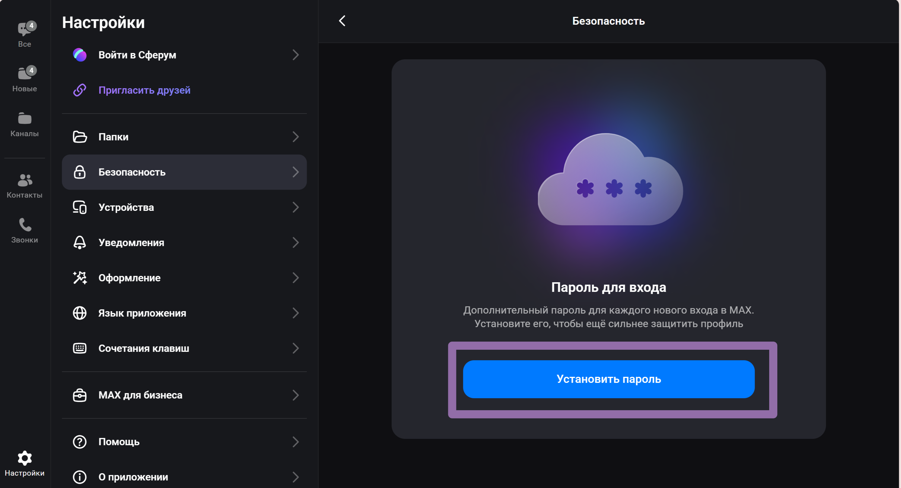
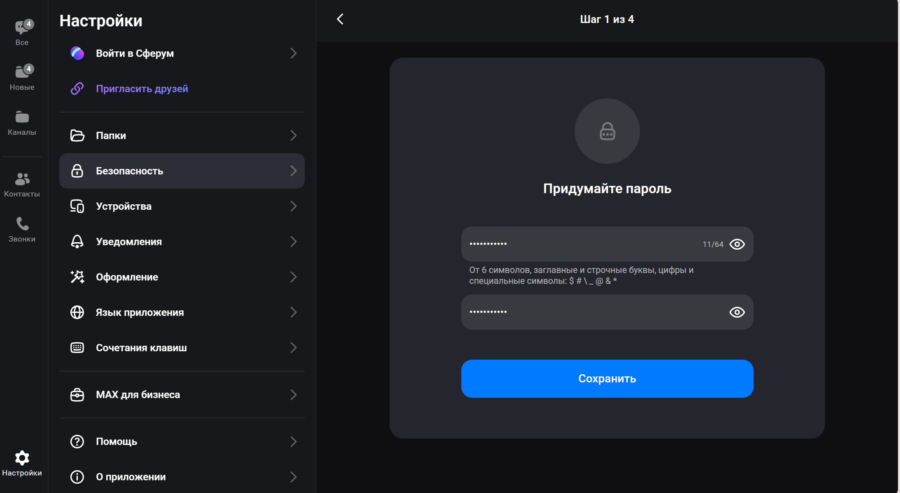
Введите подсказку → Укажите почту, чтобы можно было восстановить пароль
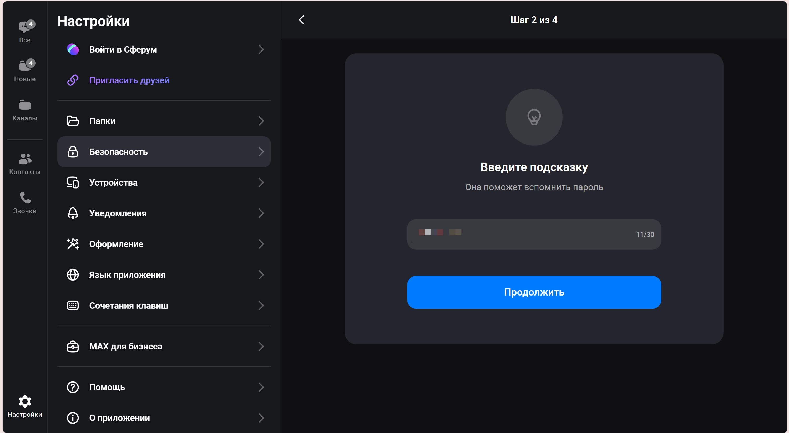
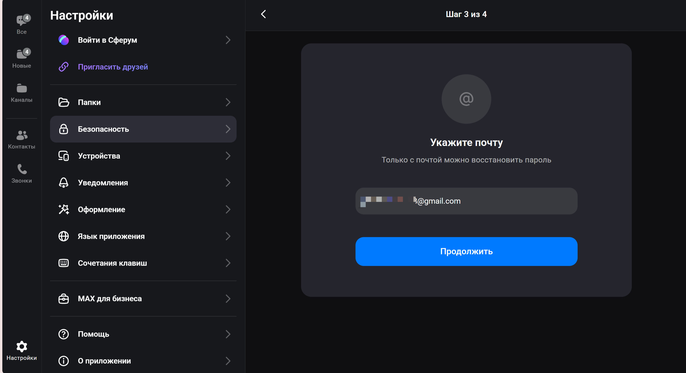
Вы успешно установили пароль! Теперь вы обезопасили вход в Ваш аккаунт!
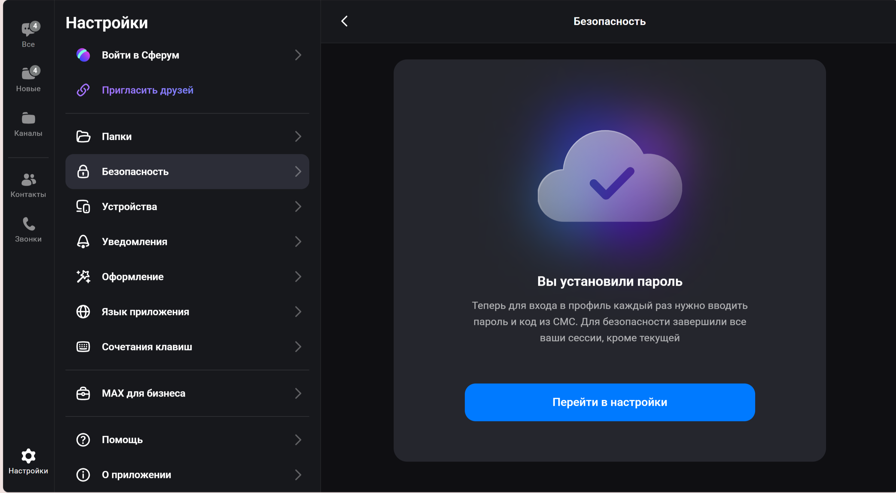
Личная информация
В разделе Безопасность можно выбрать, кто видит:
- → фото профиля;
- → время последнего посещения;
- → номер телефона;
- → статус «в сети»;
- → подписки и контакты.
Выберите один из режимов, так вы ограничите информацию о себе для нежелательных людей. Также можно исключить отдельных пользователей, создав индивидуальные правила доступа.
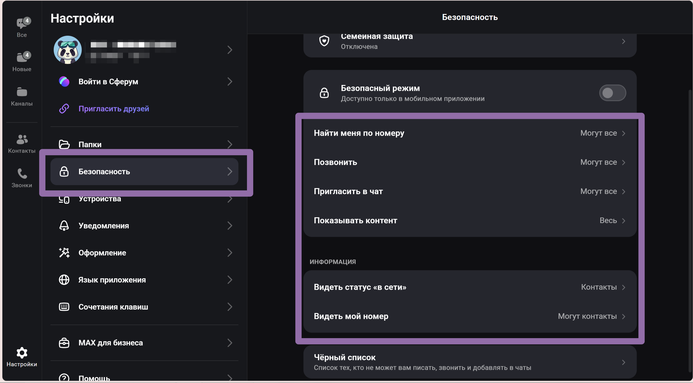
Управление активными сеансами
Регулярно проверяйте список подключений в настройках
Настройки → Безопасность → Устройства
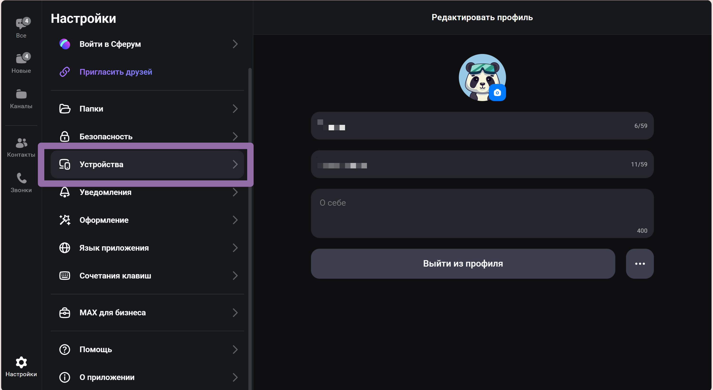
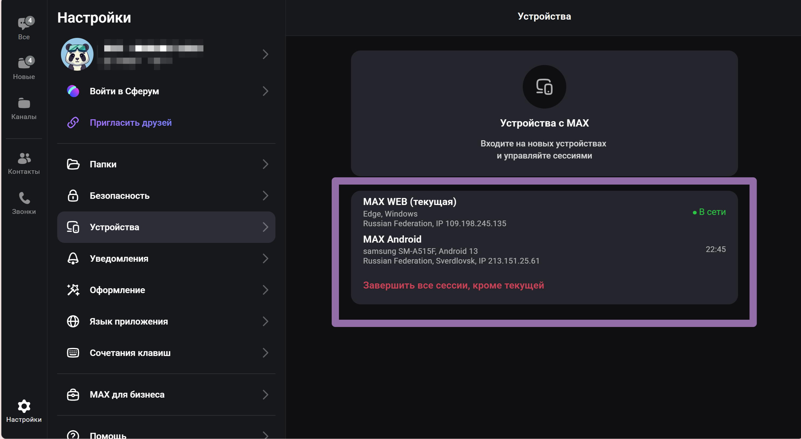
При обнаружении подозрительных сеансов завершайте их.
Семейная защита: контроль безопасности близких
В мессенджере MAX есть функция, которая позволяет следить за безопасностью аккаунта ваших родственников. Эта функция позволяет получать уведомления о подозрительных контактах, а также обеспечивает защиту от добавления в мошеннические группы
Как включить:
Безопасность → Семейная защита →Создать/Вступить
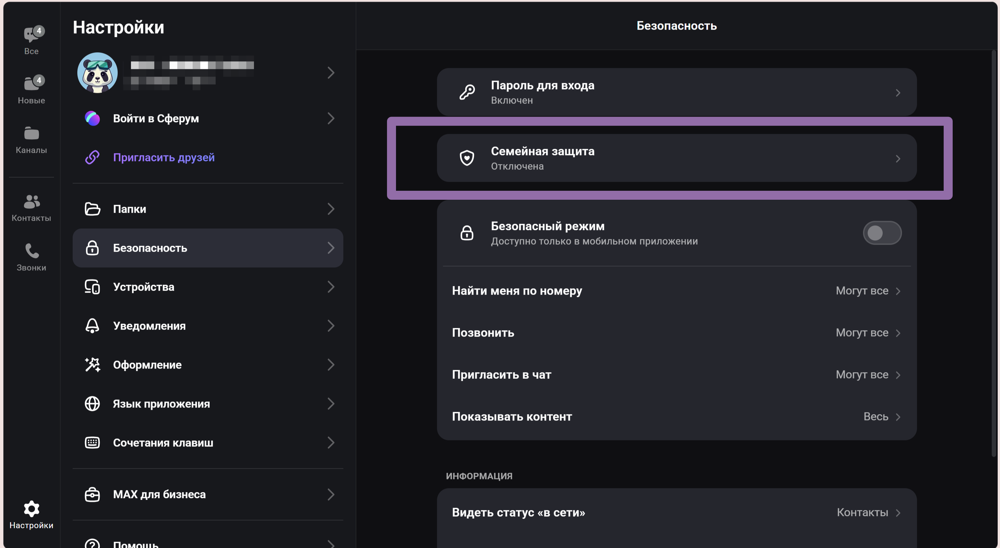
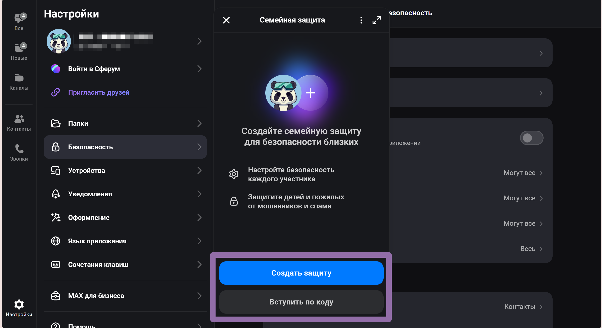
Создайте защиту или вступите по коду
Включение безопасного режима
Это специальный режим приватности с возможностью быстро ограничить взаимодействие с неизвестными. После включения профиль становится скрытым, а также писать и звонить могут только сохраненные контакты.(Доступно только в моб.приложении)
Профиль → Безопасность → Безопасный режим( перетащите тумблер влево)
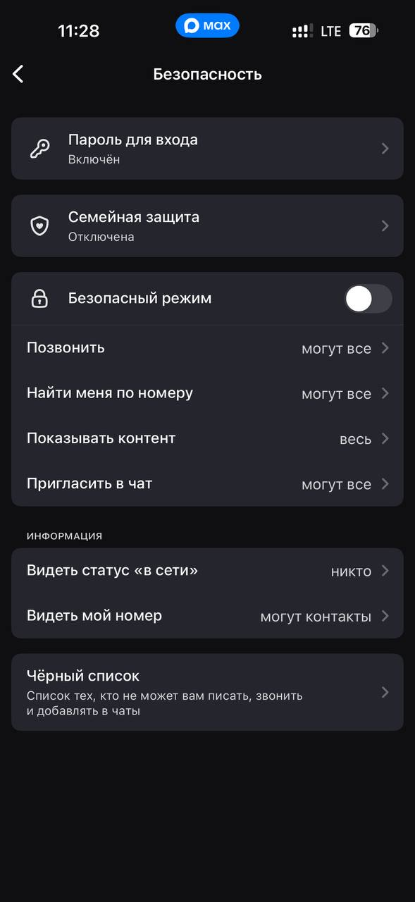
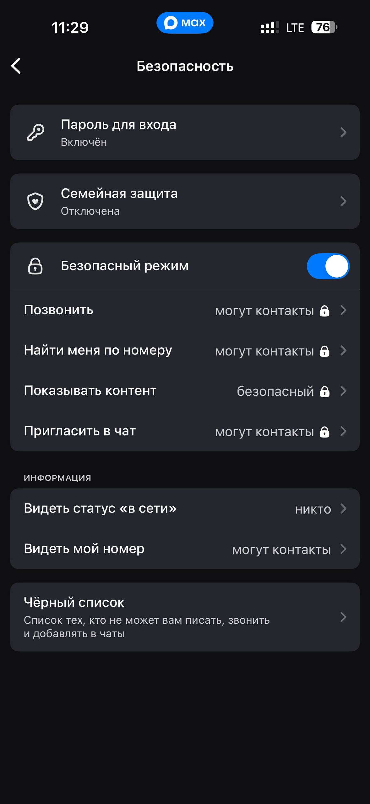
Фишинг и мошенничество
Не ведитесь на возможность заработать на продаже и аренде аккаунтов. Мошенники обещают заработок, но на деле жертва просто теряет доступ. После авторизации на чужом устройстве аккаунт используют для мошеннических целей.
Никому не сообщайте код из смс. Даже если пишет “сотрудник безопасности” или сообщают о “подозрительной активности”.
Не переходите по ссылкам о подтверждении записи в реестре или других гос.сервисах.